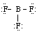
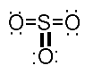
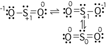

| BF3 |  |
Rotatable 3-D image in
browser |
RasMol file |
| CO32- |  Note that there are two additional resonance structures; thus all the oxygen are equivalent. |
Rotatable
3-D image in browser |
RasMol file |
| SO3 |  |
Rotatable 3-D image
in browser |
RasMol file
|
| SO2 |  The bottom structure is the best based on the formal charges (small numbers next to each atom). |
Rotatable 3-D image in browser | RasMol file |